Technical Assessments for Project applications
Technical Assessments can now be entered directly into SAFE.
If you do not already have a SAFE account, you should create one.
Under the Apply menu, select Technical Assessments
Click for image
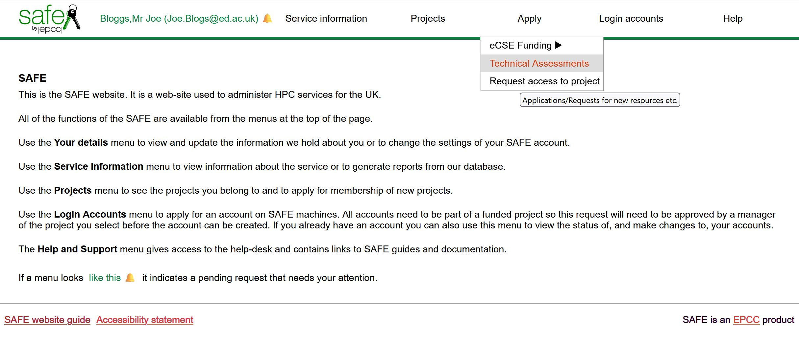Any TAs you have created previously will be shown.
Create a new Technical Assessment
To begin a new TA, click on Create.
Select the correct access Call from the drop-down list of available Calls. This information may have been included in any communication asking you to complete the Technical Assessment.
Click for image
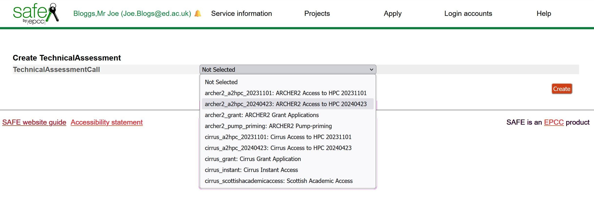Click Create.
Click for image
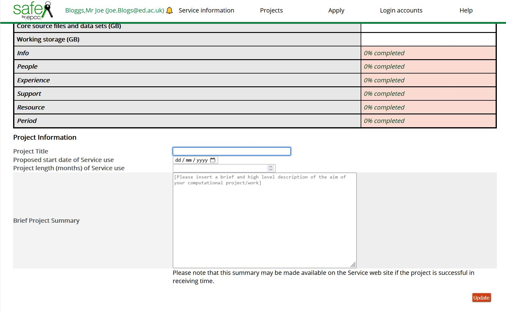Now enter the details about the project including the Title, Start date, Length and a brief summary of the project.
Click for image
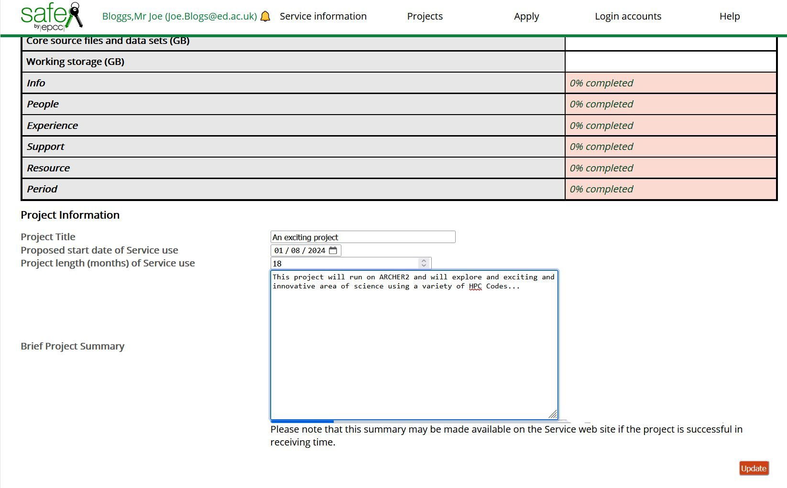Click Update.
If all details were filled in then you should see TechnicalAssessment update Status, TechnicalAssessment.NNN updated OK
Click for image
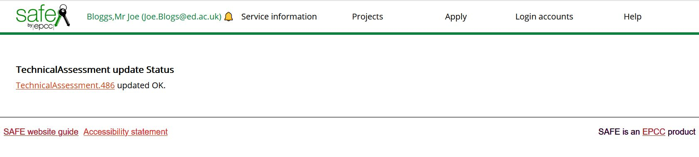The assessment is now entered into SAFE, but there are still many details to enter before it is complete.
Hint
All sections must be 100% completed before you will be able to Submit your assessment.
If any part of any section is not relevant, always enter something such as "n/a" into the field.
The final Submit button will appear once all sections are completed.
Click on the TechnicalAssessment.NNN above to go back into the Technical Assessment and proceed to enter the remaining details.
Hint
You can always return to the form, if you wish, by selecting Technical Assessments under the Apply menu, and selecting the TechnialAssessment.NNN under ID
Sections:
Invite
The system will default to setting you as the proposed project PI, as you have entered the TA details, but if you are filling this in on behalf of the PI, or anyone else needs to be included on the application e.g. as the contact person, you need to Invite them to the TA.
Click on the Invite button at the foot of the screen
Click for image
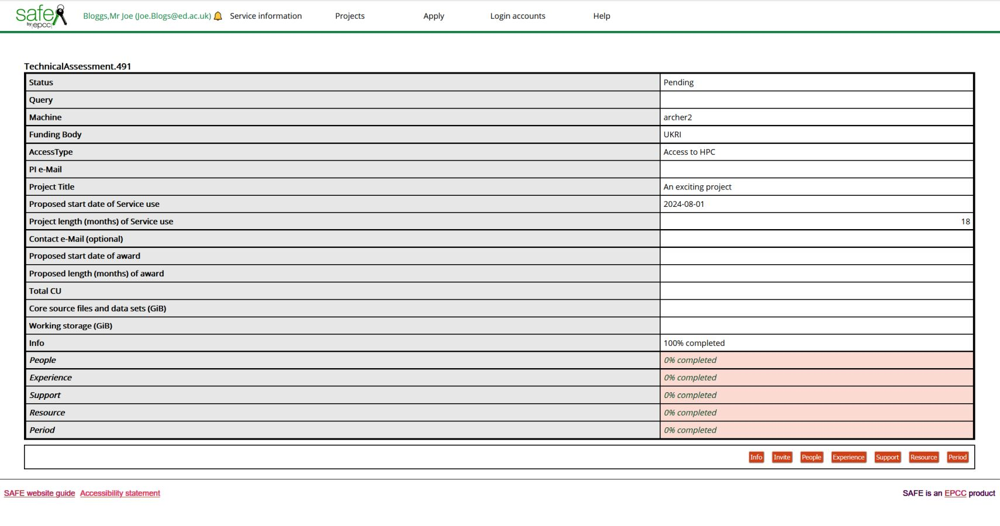Fill in the email address of the person, and fill in a short message to let them know why they are being invited.
Click for image
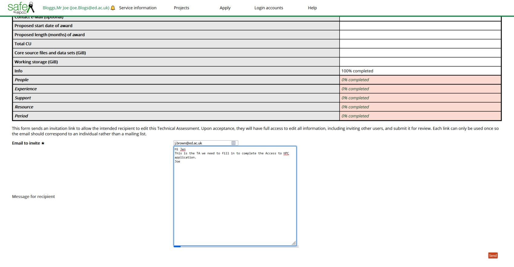Click Send
Any person whose details (email address) are added for which a SAFE account does not yet exist will need to set up their SAFE account, using that email address.
Repeat the invite process for any others who need to contribute to the TA
People
Click on the People button at the foot of the screen
Click for image
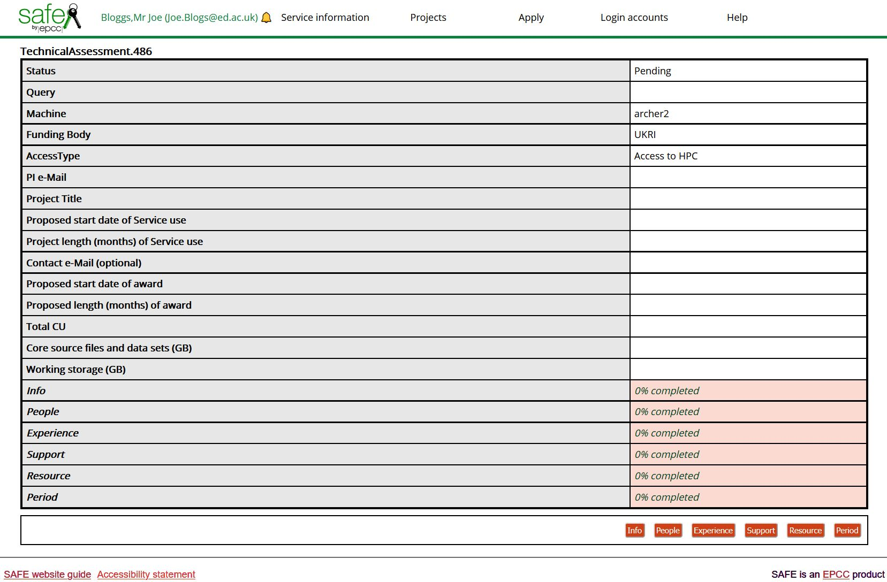The system will default to setting you as the proposed project PI, but you can select any of the people who you have invited as the PI, and/or as the Contact, once they have accepted the invitation you sent.
Click for image
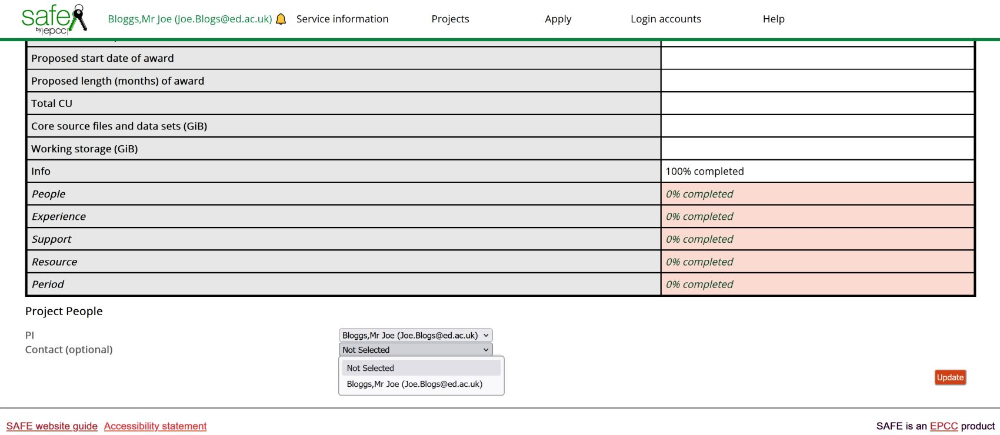If you wish to receive correspondence and updates about the project and the TA approval, leave your email as the Contact email for this proposal.
Click Update.
Click for image
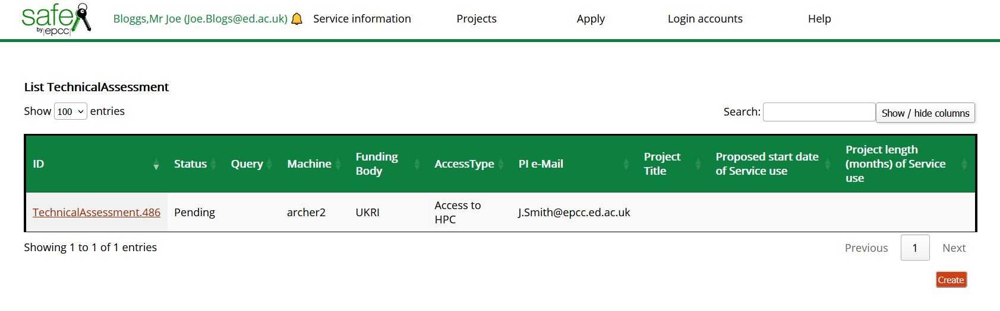You can always return to the form, if you wish, by selecting Technical Assessments under the Apply menu, and selecting the TechnialAssessment.NNN under ID
Click for image
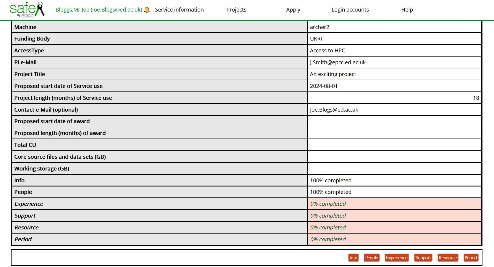You can now see that the Info and People sections are 100% completed, but the remaining sections are 0% completed.
Click on the Experience button and fill in details of which other HPC resources your project members have used (if any) and brief details of the work that was run. Please enter something into each box, even if it is to say "No other HPC used", or "n/a"
Click Update.
Support
Click on Support.
Click for image
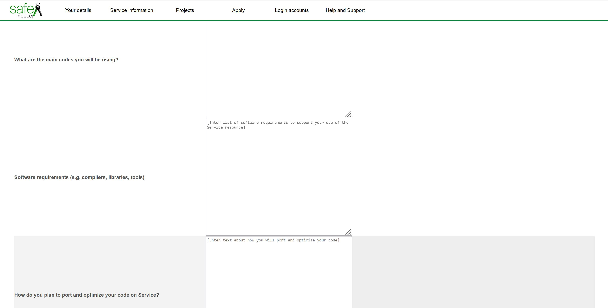and fill in details about the main codes your project will be using, the software (compilers, libraries, tools) that you will need. Briefly describe how you will port and optimize your code and any other support requirements. Please enter something into each box.
Click Update.
Resource
Click on Resource.
Click for image
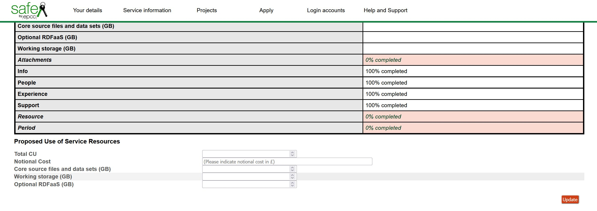Enter the total compute resource you are requesting for this project - the units used will be determined by which HPC service you are applying to.
The Notional Cost can be calculated using the figures from the appropriate service:
Enter the storage required for core source files and data sets (/home backed up storage)
Enter the storage required for working storage (/work no backup, fast access storage)
Click Update.
Period
Click on Period.
Click for image
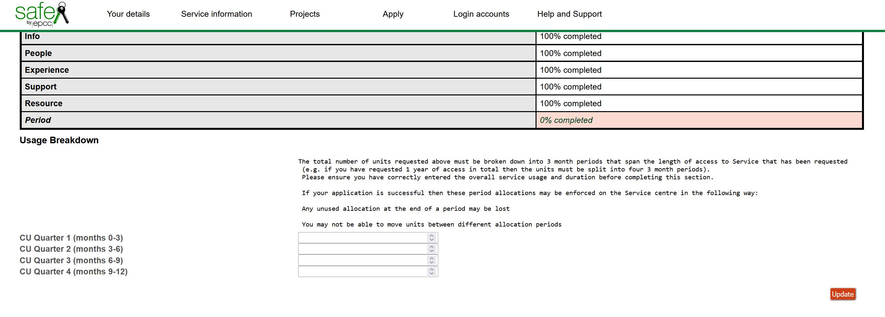Because the compute resource allocation will be broken down into Allocation Periods spread throughout the lifetime of the project, in this section you indicate how you would like this split.
It is possible to have an even split between the allocation periods, but you should consider whether for example in the first part of the project you may be preparing your software and data and only performing small test runs, with the majority of the work taking place in the later periods, perhaps with the aim that most work will be completed before the final period when only a few small confirmation or re-runs will be required.
The split is entirely at the discretion of the PI, but should take into account that any unused allocation at the end of a period may be lost, as you will not generally be able to move units between different allocation periods.
Click for image
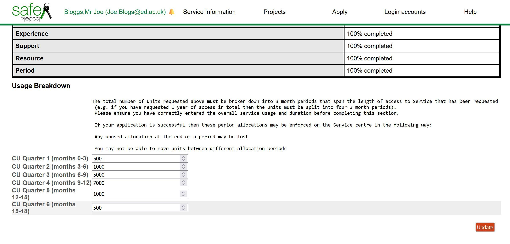Check that the sum of your allocation periods match the total compute resource requested.
Click Update.
Reviewing and Editing
The PI or the Contact (as entered under People above) can go back and edit any of the sections, in any order, as many times as you wish, until you proceed to Submit.
Submit
Once all sections are 100% completed then an additional Submit button will appear at the foot of the page. Remember you must enter something into all the data entry fields, even if it is "n/a".
Once you are happy that all the details are complete and correct, click on Submit, then Update.
Warning
You MUST click Submit on the TA, it will not be passed on for review until you submit it.
The Technical Assessment will now show as status "Submitted" and will be reviewed by the Service Team who will get back to you if they have any questions or comments.
Click for image
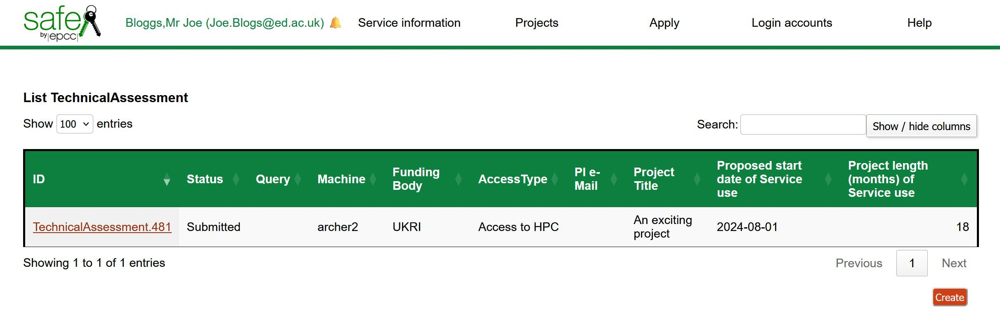Seeing your Technical Assessments
You can always see your active (incomplete and submitted) Technical Assessments in SAFE under the Apply menu.
Once submitted, can still view the information that you entered, but cannot make further updates to the form. In the event you realise there is a significant error, please contact the Support desk for the service you have applied to, with details, so they can amend your form if required.
If you have other project proposals, then you can go ahead and Create a new TechnicalAssessment for those.